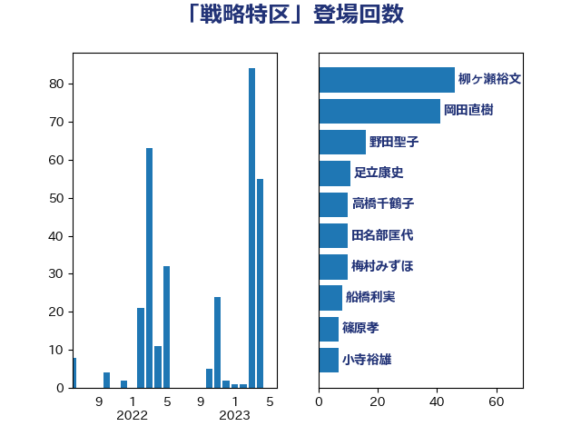

単語「戦略特区」

| 坂本哲志 | 自由民主党 | 43 回 |
| 柳ヶ瀬裕文 | 日本維新の会 | 42 回 |
| 田名部匡代 | 立憲民主党 | 16 回 |
| 野田聖子 | 自由民主党 | 16 回 |
| 田村まみ | 国民民主党 | 11 回 |
| 梅村みずほ | 日本維新の会 | 10 回 |
| 和田政宗 | 自由民主党 | 9 回 |
| 吉川赳 | 無所属 | 7 回 |
| 徳永エリ | 立憲民主党 | 6 回 |
| 美延映夫 | 日本維新の会 | 6 回 |
| 宮路拓馬 | 自由民主党 | 5 回 |
| 岸田文雄 | 自由民主党 | 5 回 |
| 田村智子 | 日本共産党 | 5 回 |
| 中曽根康隆 | 自由民主党 | 4 回 |
| 守島正 | 日本維新の会 | 4 回 |
| 宮本徹 | 日本共産党 | 4 回 |
| 沢田良 | 日本維新の会 | 4 回 |
| 藤田文武 | 日本維新の会 | 4 回 |
| 西岡秀子 | 国民民主党 | 4 回 |
| 小山展弘 | 立憲民主党 | 3 回 |
| 小泉進次郎 | 自由民主党 | 3 回 |
| 岸真紀子 | 立憲民主党 | 3 回 |
| 篠原孝 | 立憲民主党 | 3 回 |
| 赤池誠章 | 自由民主党 | 3 回 |
| 音喜多駿 | 日本維新の会 | 3 回 |
| 古賀友一郎 | 自由民主党 | 2 回 |
| 梶山弘志 | 自由民主党 | 2 回 |
| 石井苗子 | 日本維新の会 | 2 回 |
| 空本誠喜 | 日本維新の会 | 2 回 |
| 竹谷とし子 | 公明党 | 2 回 |
| 菅義偉 | 自由民主党 | 2 回 |
| 高木啓 | 自由民主党 | 2 回 |
| 小沼巧 | 立憲民主党 | 1 回 |
| 岡本あき子 | 立憲民主党 | 1 回 |
| 河野太郎 | 自由民主党 | 1 回 |
| 浮島智子 | 公明党 | 1 回 |
| 片山さつき | 自由民主党 | 1 回 |
| 紙智子 | 日本共産党 | 1 回 |
| 舟山康江 | 国民民主党 | 1 回 |
| 萩生田光一 | 自由民主党 | 1 回 |
| 藤木眞也 | 自由民主党 | 1 回 |
| 足立康史 | 日本維新の会 | 1 回 |
| 逢坂誠二 | 立憲民主党 | 1 回 |
| 進藤金日子 | 自由民主党 | 1 回 |
| 野上浩太郎 | 自由民主党 | 1 回 |
| 馬場伸幸 | 日本維新の会 | 1 回 |
| 高木かおり | 日本維新の会 | 1 回 |
| 麻生太郎 | 自由民主党 | 1 回 |